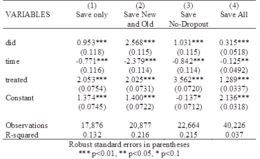
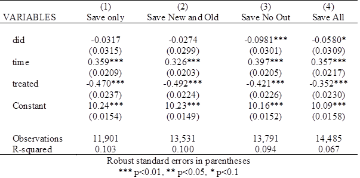

校内指导教师：岳阳老师
二〇二二年一月一日
【 摘要 】
二十一世纪以来深刻的社会科技变革也对社会的就业体系产生了系统性的冲击。我国十八届五中全会公报和2016政府工作报告中都提到了"加强对灵活就业、新就业形态的支持"，首次提出了"新就业形态"的概念。根据人社部的统计数据显示，截止2021年，国内的灵活就业人员已达2亿多人。而国家信息中心2021年的统计数据也显示，国内为共享经济提供服务的从业者人数已达8400万人。
传统理论认为，传统灵活就业是经济面临总需求冲击时，通过创造灵活性工作吸纳部分失业者降低失业率，缓解经济衰退的内生性产业调整。而如今，灵活就业的涵义已经发生新的转变，在非经济困难时期，灵活就业也逐渐转变为大多数企业首选的劳动关系。因此本文尝试聚焦于新型灵活就业的下述问题：在不面临经济困难时，灵活就业取代传统就业这一趋势是否切实增加了就业人员的效用?
考虑到2020年经济形势受疫情冲击严重，研究采用了CFPS（中国家庭追踪调查）2014年与2018年的就业数据，采用了双重差分的研究方法，分别用收入和工作总体满意度表征物质效用和精神效用。经过研究，本文最终得出以下结论：灵活就业风潮显著地提高了2014-2018年期间由传统就业转而从事灵活就业人员的工作总体满意度，但对其实际收入没有提升作用。同时，灵活就业风潮给该时间段刚进入市场的劳动力提供了更多的就业岗位，从而显著提升了整体人群的工作满意度。
【 关键词 】新型灵活就业；共享经济；工作满意度；双重差分；CFPS
一、绪论
二十一世纪以来，互联网科技的高速发展引领了第四次工业革命的开端。深刻的社会科技变革也对社会的就业体系产生了系统性的冲击。我国十八届五中全会公报和2016政府工作报告中都提到了"加强对灵活就业、新就业形态的支持"，首次提出了"新就业形态"的概念。
2020以来，人类社会受疫情冲击，就业体系再一次受到系统性冲击。就业稳定更加依赖平台经济、灵活就业发展。人社部的统计数据显示，截止2021年，国内的灵活就业人员已达2亿多人。[1]而国家信息中心2021年的统计数据也显示，国内为共享经济提供服务的从业者人数为8400万人，远远高于这些共享平台同期的自由员工人数（631万人）[2]。
得益于互联网科技的成长，新动能的成长壮大。更具灵活性的网约车部分替代了传统的出租车行业，便利的快递、外卖骑手等拓宽了食品业的覆盖深度和广度。从2014年8月起，仅滴滴专车服务平台就提供了超过一百万个就业机会，间接提供了三百万个直接就业机会[3]。选择传统就业的人员转而选择新型的灵活就业方式屡见不鲜，新型灵活就业已经开始从边缘地位逐渐转变为大多数企业首选的劳动关系，并这种风潮将会伴随新自由主义的蔓延和后现代工业生产方式不断扩张[4]。
然而，新型灵活就业是"不稳定性"的就业。新型灵活就业人员缺乏正式的工作合同，也没有固定的薪水、社保、五险一金。这种灵活的就业形式虽然能在经济困难期提供强大的就业"蓄水池"作用[5]，但在经济正常运转时期，该风潮对宏观就业结构的冲击的好坏依然难以衡量。
因此本文尝试研究下述问题：在不面临经济困难时，灵活就业取代传统就业这一趋势是否切实增加了就业人员的效用（采用收入和工作满意度衡量）？
二、文献综述
传统理论认为，传统灵活就业是经济面临总需求冲击时，通过创造灵活性工作吸纳部分失业者降低失业率，缓解经济衰退的内生性产业调整（Smith,Zenou,1997）[6]。而传统灵活就业通常会对宏观经济产生负面影响，一是因为灵活就业的不稳定性损害劳动者自身的健康和福利（Sverke et al.2002;De Cuyper et al.2008;Benach et al.2014）[7][8][9]，二是其对稳定就业具有一定的"挤出效应"(Boeri&Garibaldi,2007;Boeri,2011)[10][11]。因此，传统灵活就业被认为是需要被调控的负面经济因素。
然而，随着第四次工业革命的开端（Schawab,2016）[12]和新自由主义的兴起，福特主义代表的稳定的专业化分工的劳资关系逐渐被认为是经济形态的一种特例，而不稳定性（precarity）的新型灵活就业将会随着社会风潮重塑经济就业形态结构，从而成为社会的普遍就业形态（Brett Neilson, Ned Rossiter,2008）[13]，而非传统理论所认为的"需要被调整的特殊就业形态"。一些学者甚至认为，灵活就业将成为未来的主要就业类型，取而代之的是一个承包商、供应商及临时工的新型经济(Hanauer&Rolf,2015)[14]。
近年来，我国也深受灵活就业风潮的影响，截止2021年，共享经济的服务提供者约为8400万人，同比增长约7.7%（中国共享经济发展年度报告,2021）[15]，依托互联网产生的新业态模式，提供了更灵活的工作岗位，重塑了劳动关系（纪雯雯,赖德胜,2016）[16]。新型灵活就业人群不具备传统稳定就业人群所享有的福利保障，截至2013年底网络就业人员尚未纳入国家统计和社会保障范围(张小建,马永堂,2013)[17]，而诸如让滴滴公司之类的平台为骑手提供医社保的努力也尚未有明显成效。
当前的灵活就业市场依靠互联网平台打破了固定劳动关系的用工方式，依托知识和技术实现劳资双方双重角色转换（苏庆华,2015）[18],形成了诸多传统劳动力市场理论无法解释的现象，如高工资收入者与失业者并存、收入不平等和歧视等。因此，这种就业结构的转换，对于劳动者而言是否带来真实的效用提升，决定了我们是要拥抱新型灵活就业风潮，还是应该秉持传统理论观点，合理调控和管理灵活就业。
三、数据及理论基础
为研究新型灵活就业风潮对就业人员效用的影响。本文采用CFPS数据集，使用收入和工作总体满意度两项指标作为效用的衡量标准，使用双重差分（DID）的方法进行实证研究。
3.1 数据来源
本文实证数据来源于中国家庭追踪调查（China Family Panel Studies，CFPS）[19]，该调查由北京大学中国社会科学调查中心（ISSS）组织实施，2010年正式启动，随后于2012、2014、2016、2018和2020年，先后完成五轮追踪调查，目前调查对象已覆盖25个省、自治区、直辖市，样本扩大至16000个家庭，50000多个体。调查从个体、家庭和社区三维度展开，不仅包括了受访者的年龄、婚姻等基本信息，而且还涵盖了家庭经济金融、生产生活和社区发展等方面信息。
在时间维度上，多轮的调查为构建面板数据以及对DID方法提供的有效支撑。本文选用了2014年和2018年的数据，考虑的原因如下：一是2014年尚未迎来共享经济的蓬勃期，作为控制组受灵活就业风潮影响较小，二是2014-2018期间涵盖了互联网科技依托下的灵活就业经济的发展蓬勃期，三是2020年受疫情影响强烈，宏观经济冲击对灵活就业形态产生了更多难以量化的冲击，故而不选用2020年的数据。
3.2 数据处理
本文通过选用个体年收入的自然对数值以及个体的总体工作满意度（0-5，5为十分满意）指标分别作为物质上和精神上的个体效用指标。
在数据筛选方面，本文采用以下的原则筛选出不同类型的人群：
| _ 人群代号 _ | _ 人群含义 _ | _ 筛选原则 _ |
|---|---|---|
| A | 农业人员 | 从事农林牧渔类工作的人口 |
| F | 灵活就业人员 | 处于工作状态且满足以下任意一条 1. 没有签订正式的劳动合同 2. 没有五险一金 3. 为自家干活以及在家工作 |
| T | 传统就业人员 | 处于工作状态，且不是灵活就业人员 |
| N | 非就业人员 | 不处于工作状态 |
表一 人群数据划分表
根据以上原则筛选出数据后，排除掉非就业人员与农业人员，进一步将每个个体划分为以下类型：
- 2014年为传统就业人员，2018年为灵活就业人员（处理组）
- 2014年与2018年均为传统就业人员
- 2014年与2018年均为灵活就业人员
- 2014年处于劳动力市场，2018年退出劳动力市场的老龄人员
- 2014年未处于劳动力市场，2018年加入劳动力市场的青壮年人员
最后，根据数据的分布进一步调整变量，并删除部分缺失值和离群点。
3.3 双重差分理论
双重差分法（Differences-in-Differences）[20]作为一种适用于面板数据的实证分析方法，逐渐成为一种固定效应评估方法，具有以下的优点。一是可以很大程度上避免内生性问题的困扰；二是可以更加科学地估计出政策效应。
具体来说，基准的DID模型设置如下：
其中，du为分组虚拟变量，若个体i受政策实施的影响，则个体i属于处理组，对应的du取值为1，若个体i不受政策实施的影响，则个体i属于对照组，对应的du取值为0。dt为政策实施虚拟变量，政策实施之前dt取值为0，政策实施之后dt取值为1。du·dt为分组虚拟变量与政策实施虚拟变量的交互项，其系数就反应了政策实施地净效应。
本文将2016年国家层面开始扶持共享经济和互联网平台作为政策实施点，2014年标记为政策未发生，2018年标记为政策发生后。因此处理组为：2014年从事传统就业，2018年从事灵活就业的人员。
四、实证模型
4.1 变量解释说明
本文研究模型使用的变量如下表所示：
| 维度 | 变量 | 含义 | 注释 |
|---|---|---|---|
| 因变量 | qg12_log | 全年总收入对数值 | 全年总收入为0视为缺失值 |
| — | — | — | — |
| qg4 | 总体工作满意度 | 值为0-5的评分 | |
| 自变量 | time | 时间固定效应 | Year为2018=1，Year为2014=0 |
| treated | 政策影响固定效应 | 甄别方法详见3.2部分 | |
| did | 值为time*treated | 区分控制组与处理组 | |
| 控制变量 | new | 是否保留青壮年人员和老龄人员 | 保留=1；不考虑=0 |
| paired | 是否仅保留成对数据 | 保留=1；不考虑=0 | |
| missed | 是否保留所有非缺失值数据 | 保留=1；不考虑=0 | |
| 其他变量 | pid | 个体id | |
| agri | 是否为农业人口 | 是=1；不是=0 |
表二 变量的解释与说明
4.2 DID模型
本文的DID模型设置如下：

其中：
$i$代表每个个体样本；
$\gamma$代表是否为处理组；
$\lambda$代表时间是否为灵活就业风潮影响之后；
$Y_{ist}$在两个不同的回归里分别代表收入和工作总体满意度；
$\delta$即我们所关心的净效应。
五、研究结论
由于问题背景较为复杂，因此不同对照组的组成会对结论产生较大的影响。回归中，本文通过控制上文所述的paired、new、missed的三个控制变量，分别研究下列四种情况的结果。
- 仅保留拥有2014、2018成对数据的样本个体。
- 保留A以及青壮年（2014年未进入劳动力市场）、老年人（2018年退出劳动力市场）的样本个体。
- 保留所有不具有缺失值的样本个体的数据。
- 保留所有数据。
5.1 对工作总体满意度的影响
回归结果如图所示：

由图可知，无论保留何种数据作为控制组，处理组（2014年选择传统就业，2018年转而选择灵活就业的人员）工作满意度受灵活就业风潮的影响都十分明显。即本文认为统计意义上，新型灵活就业风潮有效地提高了从业人员的精神效用。
值得注意的是，其中考虑青壮年、老龄人口的回归中，DID效应最为显著。说明灵活就业为大量青壮年提供了一份比起在同年度退休的老龄人更加满意的初始工作。
5.2 对收入的影响
回归结果如图所示：

由图可知，无论是保留哪种数据作为控制组，处理组（2014年选择传统就业，2018年转而选择灵活就业的人员）收入受灵活就业的影响都十分不显著，且其值为负，说明部分人员的收入不但没有提升，反而有所下降。
该结论与5.1的结论形成对比，即灵活就业风潮虽然带来了工作满意度的提升，但并没有显著影响收入。本文认为可能的原因：一是灵活就业方式给予了灵活就业人员更灵活的时间安排权利；二是依托于互联网平台的工作形势比起传统的工作更具便利形式；三是数据集存在部分缺陷，存在一定量全年总收入值缺失，但拥有工作总体满意度评价的样本，该类样本对回归产生了显著的影响。
5.3 结论与建议
由回归结果可知，依托互联网的新型灵活就业方式在确实有效地提升了工作总体满意度。但由于其并没有提升劳动获得（即收入），我们认为，这种工作满意度的提升更多的是基于科技便利性的红利，使得工作灵活性和便利性较为优秀。
而该类人员实际收入并没有显著提高，反而承担了没有对应福利保障、收入不稳定等风险，这一事实也告诉我们，新型灵活就业仍应加强改革，平台类企业应该承担起应有的社会责任，自觉增加从业人员的福利保障或者实际收入，使其劳有所得。
六、参考文献
[1] 人民资讯:2021.05.21. https://baijiahao.baidu.com/s?id=1700326717558596981&wfr=spider&for=pc
[2] 中国共享经济发展报告（2021）.2021.02.19. http://www.sic.gov.cn/News/557/10779.htm
[3] 王欣:移动互联网时代分享经济的模式正逢其时[EB/OL].(2015-11-07). http://www.cac.gov.cn/2015-11/07/c\_1117070017.htrn.
[4] 学院派Academia.现在就业难、失业快的本质原因：以美国为例. https://www.bilibili.com/video/BV1iS4y197ts?spm\_id\_from=333.999.0.0
[5] 国务院政策例行吹风会.充分发挥灵活就业的"蓄水池"作用. https://baijiahao.baidu.com/s?id=1674600054859160310&wfr=spider&for=pc
[6] TONY ESMITH,YVES ZEN OU, Dual labor markets, urban unemployment, and multicentric cities[J].Journal of economic theory,1997(76):185-214.
[7] J BENACH, et al. Precarious employment: Understanding an emerging social determinant of health [J]. Annual review of public health, 2014, 35(1):229-253.
[8] CUYPER D.E, et al. Literature review of theory and research on the psychological impact of temporary employment: Towards a conceptual model [J]. International journal of management reviews, 2008, 10(1):25-51.
[9] SVERKE M, et al. No security: A meta-analysis and review of job insecurity and its consequences [J]. Journal of occupational health psychology, 2002,7(3):242-264.
[10] J BOERI T, GARIBALDIP. Two tier reforms of employment protection: A honeymoon effect? [J] Economic journal, 2007, 117 (521): F357-F385.
[11] BOERIT. Institutional reforms and dualism in European labor markets [M]. Handbook of labor economics. Amsterdam: Elsevier, 2011,4:1173-1236.
[12] K Schwab, X Sala-i-Martín. The global competitiveness report 2013–2014: Full data edition, 2016. repositorio.colciencias.gov.co
[13] Neilson B, Rossiter N. Precarity as a Political Concept, or, Fordism as Exception. Theory, Culture & Society. 2008;25(7-8):51-72. doi:10.1177/0263276408097796
[14] N Hanauer, D Rolf. Shared security, shared growth.LERA for Libraries, 2015-lerachapters.org
[15] 同[2]
[16] 纪雯雯,赖德胜.从创业到就业：新业态对劳动关系的重塑与挑战一以网络预约出租车为例[J].中国劳动关系学院学报,2016(2): 23-28.
[17] 张小建,马永堂.我国网络创业就业发展状况和对策研究[J].第一资源，2013, (1): 27-40
[18] 苏庆华.新兴商业模式与雇佣关系规制——互联网众筹模式下的雇佣关系问题分析[J]． 中国人力资源开发，2015(14): 89-93.
[19] 北京大学.中国家庭追踪调查（China Family Panel Studies，CFPS）.http://isss.pku.edu.cn/cfps/index.htm
[20] Abadie, A. (2005), "Semiparametric difference-in-difference estimators," Review of Economic Studies, 72, 1–19.